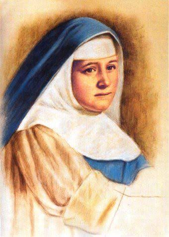

L'Institut Carmen Salles est une école conventionnée catholique des sœurs de l'immaculée conception.
Elle est située dans la ville province de Kinshasa précisement dans la ville de kisenso au quartier Mbuku sur l'avenue Bamba N°13.
Les sœurs sont arrivées en 1997 dans la commune de Kisenso ayant pour but d'installer une école nom de «Carmen Sallés» où le nom de l'Institut Carmen Salles. Pourquoi ce nom de Carmen Salles?
Ce nom a été donné en mémoire de la Sainte Carmen Sallès qui fut la fondatrice des conceptionistes Missionnaires de l'Enseignement. Qui est Carmen Salles?

Carmen Sallés y Barangueras (Vic, 9 avril 1848 – Madrid, 25 juillet 1911) est une religieuse espagnole fondatrice des conceptionistes Missionnaires de l'Enseignement et reconnue sainte par l'Église catholique.
Dès le début, elle se consacre à préparer adéquatement les futurs religieuses enseignantes. Elle déploie toute son énergie à la création d'écoles, en 19 ans de travail, elle fonde 13 maisons. Elle meurt à Madrid le 25 juillet 1911 à 63 ans, elle est béatifiée le 15 mars 1998 par Jean Paul II et canonisée le 21 octobre 2012 par Benoît XVI. En savoir plus Objectif
Des sœurs dévouées ne regardant pas leurs intérêts personnelles ont accepté de venir dans un milieu autre fois plus reculé et pauvre que de nos jours, loin de leurs familles et de leurs proches dans le seul but d’apporter une bonne éducation aux enfants de cette contrée.
Elles avaient et elles ont jusqu’à présent poursuivi comme objectif : de favoriser les enfants vivants dans un milieu reculé en leur donnant la chance d’avoir une bonne éducation de qualité comme dans des grandes écoles de la ville.
Evolution
L'école a évoluée progressivement c'est-à-dire elle a été construite progressivement de la maternelle aux humanités.
Les sœurs ont tout d’abord commencé par construire l’école maternelle et ont grandi tout doucement avec ces élèves en construisant à chaque grande vacance une nouvelle classe.
La première promotion est celle de 2009. L’école a connu plusieurs préfètes dont la première de toutes est la sœur Isabel Moraza (espagnole).
En 2021 l'école a connu 14 promotions aux humanités et à délivrer 712 diplômes dont 500 en section Biochimie et 212 en section Commerciale.
A propos du site
Le site Institut Carmen Sallès a été conçu dans l’unique but de permettre d’avoir plus d’information sur l’école sans faire trop d’effort de déplacement et d’être toujours à la page par rapport aux activités de l’école.